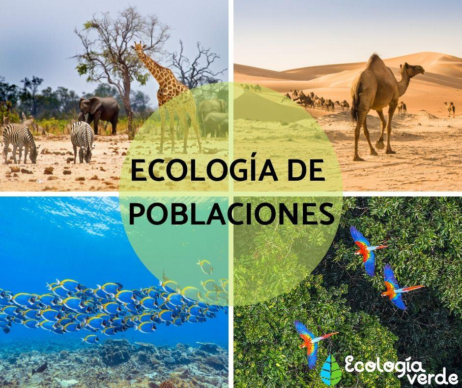
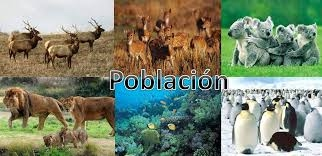
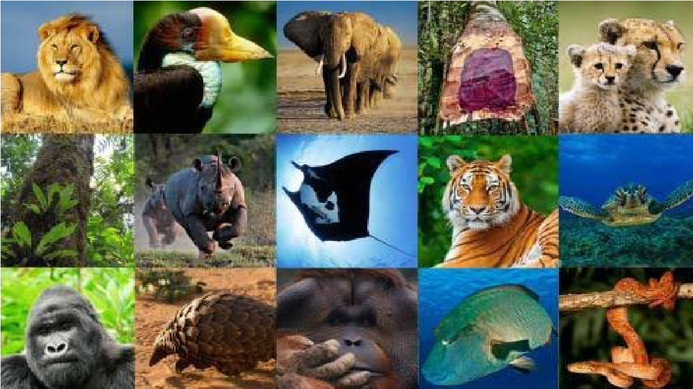

SI BIEN LA ECOLOGÍA HUMANA ESTUDIABA A LA SOCIEDAD PARA ENTENDER SU CONDUCTA, LA ECOLOGÍA DE POBLACIONES ES AÚN MÁS COMPLEJA.
EN ESTA DISCIPLINA DEBEMOS PENSAR INCLUSO EN LOS RECURSOS Y LAS CONDICIONES QUE AFECTAN A LOS SERES HUMANOS. ADEMÁS, EL FACTOR SOCIAL
VUELVE A ESTAR PRESENTE, YA QUE INTERVIENEN INCLUSO LAS RELACIONES SOCIALES QUE TENEMOS CON LAS PERSONAS QUE NOS RODEAN.

LA ECOLOGÍA DE POBLACIONES ES LA RAMA DE LA ECOLOGÍA QUE ESTUDIA LA ESTRUCTURA Y DINÁMICA DE LAS POBLACIONES.
PODEMOS DEFINIR UNA POBLACIÓN COMO EL CONJUNTO DE INDIVIDUOS DE UNA MISMA ESPECIE QUE HABITAN UN MISMO LUGAR EN UN MISMO TIEMPO.
CUÁL ES LA IMPORTANCIA DE LA ECOLOGÍA DE LAS POBLACIONES:
LA ECOLOGÍA DE POBLACIONES ES EL ESTUDIO DE LAS VARIACIONES, EN TIEMPO Y ESPACIO,
DE LOS TAMAÑOS Y DENSIDADES DE LAS POBLACIONES. EL ESTUDIO DE LA ECOLOGÍA A NIVEL DE LA POBLACIÓN ES UNA DE LAS RAMAS DE LA ECOLOGÍA QUE HA
PROPORCIONADO MÁS INFORMACIÓN SOBRE EL FUNCIONAMIENTO DE SISTEMAS ECOLÓGICOS Y LA EVOLUCIÓN.

CUÁLES SON LOS TIPOS DE POBLACIÓN:
TIPOS DE POBLACIÓN HUMANA
•POBLACIÓN MUNDIAL. EL TÉRMINO 'POBLACIÓN MUNDIAL' SE UTILIZA ESPECIALMENTE APLICADA AL SER HUMANO.
•POBLACIÓN LOCAL.
•POBLACIÓN URBANA.
•POBLACIÓN RURAL.
•POBLACIÓN DE DERECHO.
•POBLACIÓN DE HECHO.
•POBLACIÓN TRANSEÚNTE.
•POBLACIÓN FLOTANTE.
QUÉ SON LAS POBLACIONES Y PORQUE SON IMPORTANTES:
LA POBLACIÓN ES EL CONJUNTO DE PERSONAS O ANIMALES DE LA MISMA ESPECIE QUE SE ENCUENTRAN EN UN MOMENTO Y LUGAR DETERMINADO.
ES DECIR, AUNQUE LA PALABRA POBLACIÓN SEA USUALMENTE MÁS USADA PARA HACER ALUSIÓN A UNA COMUNIDAD HUMANA, TAMBIÉN PUEDE APLICAR A OTROS ANIMALES..

CÓMO SE COMPONE LA POBLACIÓN:
LA ESTRUCTURA DE POBLACIÓN SE DETERMINA POR LOS PROCESOS DE FERTILIDAD, MORTALIDAD Y MIGRACIÓN. EN UNA PIRÁMIDE DE POBLACIÓN SE MUESTRA EL TOTAL
DE PERSONAS DEPENDIENTES SEGÚN SU EDAD; LOS DEPENDIENTES JÓVENES SON MENORES DE 15 AÑOS, Y LOS DEPENDIENTES MAYORES TIENEN MÁS DE 65 AÑOS.
QUÉ ES LA COMPOSICIÓN POBLACIONAL Y CÓMO SE CLASIFICA:
COMPOSICIÓN DE LA POBLACIÓN. LA COMPOSICIÓN DE UNA POBLACIÓN POR EDAD Y SEXO SE REFIERE A SU ESTRUCTURA INTERNA:
POR UN LADO, DE ACUERDO CON LA CANTIDAD DE VARONES Y MUJERES, Y POR EL OTRO A SU EDAD O PERTENENCIA A UN GRUPO DE EDADES DETERMINADO.